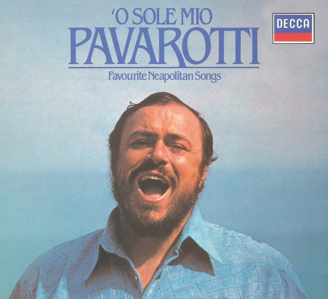

'O s o l e m i o - E d u a r d o d i C a p u a
Che bella cosa na jurnata 'e sole
 N'aria serena doppo na tempesta
Pe' ll'aria fresca pare già na festa
Che bella cosa na jurnata 'e soleMa n'atu sole cchiu' bello, oje ne'
O sole mio, sta 'nfronte a te
O sole, 'o sole mio, sta 'nfronte a te
Sta 'nfronte a teQuanno fa notte e 'o sole se ne scenne
Me vene quase 'na malincunia
Sotto 'a fenesta toia restarria
Quanno fa notte e 'o sole se ne scenneMa n'atu sole cchiu' bello, oje ne'
O sole mio, sta 'nfronte a te
O sole, 'o sole mio, sta 'nfronte a te
Sta 'nfronte a te